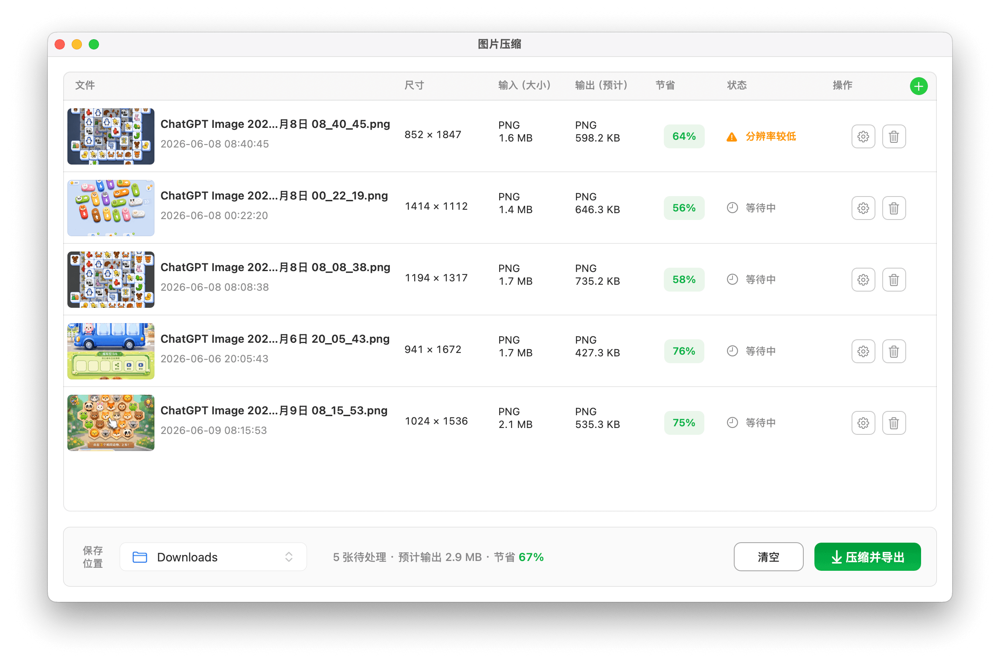

全能 Markdown
支持编辑、实时预览、大纲导航，以及 HTML、PDF、PNG 和公众号格式导出。
macOS 13.5+ · 当前版本 1.0.0
一个 macOS 原生桌面工具箱，把日常文档、图片、二维码和数字转换任务放进统一、轻量的本地工作台。


每个工具以独立窗口打开，适合在桌面上并排处理不同任务。
支持编辑、实时预览、大纲导航，以及 HTML、PDF、PNG 和公众号格式导出。
生成文本、URL、Wi-Fi 和联系人二维码，并支持颜色与 Logo 配置。
在二进制、八进制、十进制和十六进制之间快速转换数字。
默认保持原格式压缩图片，也可按需转换为 PNG、JPEG、HEIC、TIFF 等格式。
支持 16、10、8、2 进制表达式计算，适合程序员日常换算。
全能 Markdown
面向公众号作者、技术写作者和日常文档整理场景，支持从 Markdown 编辑到多平台导出的完整流程。
一键生成适合微信公众号编辑器粘贴的样式化内容，可包含本地图片，并尽量保留标题、表格、代码块和 Mermaid 图示的展示效果。
内置 GitHub、流光渐变风、清透卡片风、杂志专栏风、科技蓝绿风和暖色手账风，写作时即可切换排版效果。
编辑、预览和大纲可以并排显示，也可以切换为仅编辑或仅预览，长文结构更容易检查。
支持导出 HTML、PDF、PNG，也支持复制为公众号格式，适合保存、分享、打印和内容发布。
适用于 macOS 13.5 及以上版本。安装包由 GitHub Releases 托管。